The X Window System is a graphical user interface (GUI) that was originally developed at the Massachusetts Institute of Technology. Commercial vendors have since made X the industry standard GUI for UNIX platforms. Virtually every UNIX workstation in the world now runs some form of X.
A free port of the MIT X Window System version 11, release 6 (X11R6)
for 80386, 80486, and Pentium UNIX systems was developed by a team of
programmers that was originally headed by David Wexelblat. This
release, known as XFree86 , is available for System V/386, 386BSD, and
other Intel x86 UNIX implementations, including Linux. It provides all
of the binaries, support files, libraries, and tools required for
installation.
, is available for System V/386, 386BSD, and
other Intel x86 UNIX implementations, including Linux. It provides all
of the binaries, support files, libraries, and tools required for
installation.
Some features offered by this release are:
To use the X Window System, you are encouraged to read The X Window System: A User's Guide (see Appendix A). Here, we describe step-by-step an XFree86 installation under Linux. You still need to fill in some of the details by reading the XFree86 documentation, which is discussed below. The Linux XFree86 HOW TO is another good information source.
The documentation for your video adaptor should specify the chip set. If you are in the market for a new video card, or are buying a machine that comes with a video card, ask the vendor to find out exactly what make, model, and chip set the video card comes with. The vendor may need to call the manufacturer's technical support department. Many personal computer hardware vendors state their video card is a ``standard SVGA card,'' that ``should work,'' with your system. Explain that your software (mention Linux and XFree86!) does not support all video chip sets, and that you must have detailed information.
You can also determine your video card chip set by running the SuperProbe program which is included with the XFree86 distribution. This is described below.
Video cards using these chip sets are supported on all bus types. Virtually all of the cards support 256-color graphics modes. In addition, some of the cards support color modes like monochrome, 15-bit, 16-bit, 24-bit and 32-bit. For color depths greater than 256 (8-bit), you must have the requisite amount of video dynamic RAM (DRAM) installed. The usual configuration is 16 bits per pixel (65536 colors).
The monochrome server also supports generic VGA cards, the Hercules monochrome card, the Hyundai HGC1280, Sigma LaserView, and Apollo monochrome cards.
The release notes for the current version of XFree86 should contain the complete list of supported video chip sets. The XFree86 distribution has chip set-specific README files that give detailed information on the state of support for each chip set.
One problem faced by the XFree86 developers is that some video card manufacturers use non-standard mechanisms to determine the clock frequencies that are used to drive their card. They either don't release specifications which describe how to program the card or require developers to sign non-disclosure statements to get the information. This practice restricts the free distribution of XFree86, and the XFree86 development team is unwilling to accept it. This has been a problem with older video cards manufactured by Diamond, but as of release 3.3, Diamond actively supports the XFree86 Project, Inc.
We also suggest using an accelerated card, like a S3 chip set card. You should check the XFree86 documentation and verify that your particular card is supported before you take the plunge and purchase expensive hardware. Benchmark comparisons of video cards under XFree86 are posted routinely to the Usenet news groups comp.windows.x.i386unix and comp.os.linux.misc.
It is important to note that the average accelerated video card is significantly faster than the standard graphics card of most workstations. An 80486DX2, 66-MHz Linux System with 20 megabytes of RAM, equipped with a VESA Local Bus (VLB) S3-864 chip set card with 2 megabytes of DRAM, will consistently be about 7 times as fast a Sun Sparc IPX workstation on X benchmarks with the XFree86 server version 3.1. Version 3.3 is even faster. In general, a Linux system with an accelerated SVGA card will give you much greater performance than commercial UNIX workstations, which usually employ simple frame buffers for graphics.
The suggested setup for XFree86 under Linux is a 80486 or faster machine with at least 16 megabytes of RAM. The more physical RAM installed, the less the system must swap to and from the disk when memory is low. Because swapping is inherently slow (disks are very slow compared to memory), having 16 megabytes of RAM or more is necessary to run XFree86 comfortably. A system with 4 megabytes of physical RAM could run 10 to 100 times more slowly than one with 16 megabytes or more.
A standartd, out-of-the-box XFree86 installation requires 60-80 megabytes of disk space, at a minimum. This includes space for the X server(s), fonts, libraries, and standard utilities. If you plan to add applications, you can probably run XFree86 comfortably in 200 megabytes of disk space.
The Linux binary distribution of XFree86 is found on all CD Linux distributions and can also be found at a number of FTP sites. On sunsite.unc.edu, it is found in the directory /pub/X11/XFree86. At of the time of this writing, the current version is 3.3.1. Newer versions are released periodically. If you obtain XFree86 as part of a Linux distribution, downloading the software separately is not necessary.
These files are included in the XFree86-3.3.1 distribution.
One of the following servers is required:
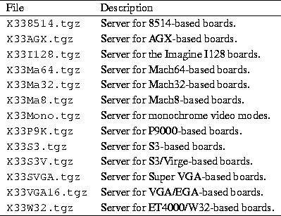
All of the following files are required:
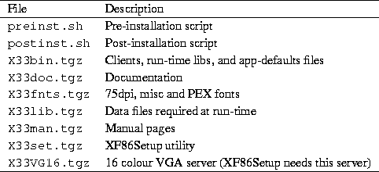
The following is required for new installations, and optional for
existing installations:
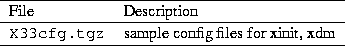
Do not install X33cfg.tgz over an existing XFree86 installation without first backing up the configuration files. Unpacking X33cfg.tgz overwrites these and other files. If you do have customized configuration files, there is no need to install this package anyway.
The bit mapped fonts distributed with release 3.3.1 are compressed with the gzip program rather than compress. You will probably want to remove the old fonts after you back them up. The X servers and font servers in previous releases cannot read fonts compressed by gzip, so keep a copy of the old fonts if you want to use older servers.
The following files are optional:
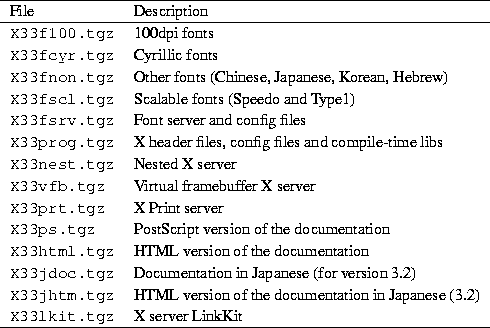
The XFree86 directory should contain README files and installation notes for the current version.
Next, as root, create the directory /usr/X11R6 if it doesn't already exist. Then run the pre-installation script, preinst.sh. You should copy the script, and all of the archive files for your system to the /var/tmp directory before you run preinst.sh. /usr/X11R6 must be your current directory when you run the pre-installation script and unpack the archives.
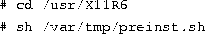
You should then unpack the files from /var/tmp to
/usr/X11R6 with a command like:
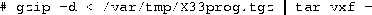
These tar files are packed relative to /usr/X11R6. You must unpack the files there. On some Linux distributions, the parent directory is /var/X11R6 instead.
After you have upacked the required files and any optional files you
selected, run the post-installation script postinst.sh.
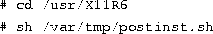
Now link the file /usr/X11R6/bin/X to the server that supports
your video card. For example, the SVGA color server,
/usr/bin/X11/X should be linked to
/usr/X11R6/bin/XF86_SVGA. To use the monochrome server instead,
relink X to XF86_MONO with the command
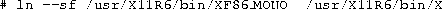
The same holds true for the other servers.
You also need to ensure that the directory, /usr/X11R6/bin, is on your path. This can be done by editing your system default /etc/profile or /etc/csh.login (based on the shell that you, or other users on your system, use). Or you can simply add the directory to your personal path by modifying /etc/.bashrc or /etc/.cshrc, based on your shell.
Finally, ensure that /usr/X11R6/lib can be located by
ld.so, the run time linker. To do this, add the line
to the file /etc/ld.so.conf, and run /sbin/ldconfig, as
root.
If you aren't sure which server to use or don't know the video card's chip set, the SuperProbe program, which is found in /usr/X11R6/bin, can attempt to determine the video chip set and other information. Write down its output for later reference.
To run SuperProbe from the command line, simply enter
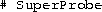
It is possible that SuperProbe will confuse hardware
that uses I/O port addresses that might be used by video cards. To
prevent SuperProbe from checking these addresses, use the excl
argument, followed by a list of addresses that SuperProbe should
not examine. For example:
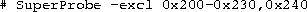
The addresses are given as hexadecimal numbers that are prefixed by
0x.
To display a list of video devices that SuperProbe knows about, use
the command
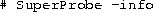
SuperProbe can print lots of information if you provide it with
the -verbose argument. You can redirect the output to a file:
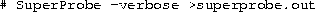
Running SuperProbe can cause the system to hang. Make certain that any non-essential applications are not running, or at least have all of their data safely saved to disk, and ensure that any users are logged off. Also, a loaded system (one that is printing in the background, for example), can skew the output of software like SuperProbe or an X server that is trying to measure the video card's timing specifications.
Creating the XF86Config file by hand is an arduous task, but it is not impossible. Several tools in the XFree86 version 3.3.1 can assist you. One of them, the XF86Setup program, can automatically generate an XF86Config file in the correct format. You must know the exact specifications of your video board and the Vertical and Horizontal refresh values of your monitor. Most of the information can be found in the owner's manuals.
Several other configuration programs are available as well, depending on the Linux distribution. The most common ones are Xconfigurator and xf86config. The latter program is an older version of XF86Setup and is included in older releases of XFree86. You should always use XF86Setup if both it and xf86config are available.
In this section, we describe how to create and edit the XF86Config file, which configures the XFree86 server. In many cases, it is best to start with an XFree86 configuration that uses a low resolution like 640x480 that is supported by nearly all video cards and monitors. Once XFree86 works at a lower, standard resolution, you can tweak the configuration to exploit the capabilities of your video hardware. This ensures that XFree86 works on your system, and that the installation is essentailly correct, before you attempt the sometimes difficult task of setting up XFree86 for high-performance use.
In addition to the information listed here, you should read the following documents:
The main XFree86 configuration file is /usr/X11R6/lib/X11/XF86Config. This file contains information for your mouse, video card parameters, and so on. The file XF86Config.eg is provided with the XFree86 distribution as an example. Copy this file to XF86Config and edit it as a starting point.
The XF86Config manual page explains the format of the XF86Config file. Read the manual page if you have not done so already.
We are going to describe a sample XF86Config file, a section at a time. This file may not look exactly like the sample file included in the XFree86 distribution, but the structure is the same.
Note that the XF86Config file format may change with each version of XFree86. See your distribution's release notes for errata.
Do not copy the configuration file listed here to your system and try to use it. A configuration file that does not correspond to your hardware can drive the monitor at a frequency which is too high. There have been reports of damage to monitors, especially fixed-frequency monitors, that has been caused by incorrectly configured XF86Config files. Make absolutely sure that your XF86Config file corresponds to your hardware before you use it.
Each section of the XF86Config file is surrounded by a pair of lines with the syntax, Section "section-name"... EndSection.
The first section of the XF86Config file is Files, which looks like this:
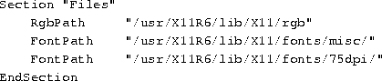
The RgbPath line sets the path to the X11R6 RGB color database,
and each FontPath line sets the path to a directory containing
X11 fonts. You shouldn't have to modify these lines. Simply ensure
that a FontPath entry exists for each font type that you have
installed; that is, for each directory in
/usr/X11R6/lib/X11/fonts.
The next section is ServerFlags, which specifies several global
flags for the server. In general this section is empty.
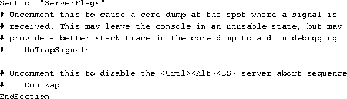
In this ServerFlags section, all of the lines are commented out.
The next section is Keyboard. This example shows a basic
configuration that should work on most systems. The XF86Config
file describes how to modify the configuration.
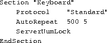
The next section is Pointer, which specifies parameters for the
mouse device:
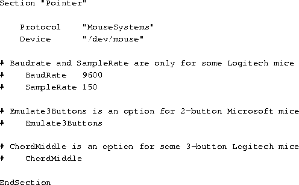
For the moment, the only options that should concern you are
Protocol and Device. Protocol specifies the mouse
protocol, which is not necessarily the same as the manufacturer.
XFree86 under Linux recognizes these mouse protocols:
Device specifies the device file by which the mouse can be accessed. On most Linux systems, this is /dev/mouse, which is usually a link to the appropriate serial port, like /dev/cua0 for serial mice and the appropriate bus mouse device for bus mice. At any rate, be sure that the device file exists.
The next section is Monitor, which specifies the characteristics of your monitor. As with other sections in the XF86Config file, there may be more than one Monitor section. This is useful if you have multiple monitors connected to a system, or use the same XF86Config file for multiple hardware configurations.
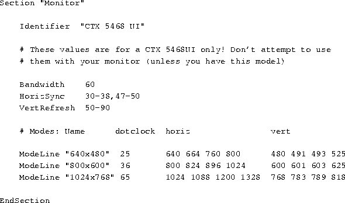
Identifier is an arbitrary name for the Monitor
entry. This can be any string and is used to refer to the
Monitor entry later in the XF86Config file.
HorizSync specifies the valid horizontal sync frequencies for
your monitor, in kHz. Multisync monitors may have a range of values,
or several, comma separated ranges. Fixed-frequency monitors require
a list of discrete values; for example:
The monitor manual should list these values in the technical
specifications section. If it does not, contact the manufacturer or
vendor of your monitor to obtain it.
VertRefresh specifies the valid vertical refresh rates (or vertical synchronization frequencies) for your monitor, in kHz. Like HorizSync, this can be a range or a list of discrete values. Your monitor manual should list them.
HorizSync and VertRefresh are used only to double-check that the monitor resolutions are in valid ranges. This reduces the chance that you will damage your monitor by driving it at a frequency which it was not designed for.
The ModeLine directive is used to specify resolution modes for
your monitor. The format is
name is an arbitrary string which you will use to refer to the
resolution mode later in the file. dot-clock is the driving
clock frequency, or ``dot clock'' associated with the resolution mode.
A dot clock is usually specified in MHz. It is the rate at which the
video card must send pixels to the monitor at this resolution.
horiz-values and vert-values are four numbers each
that specify when the electron gun of the monitor should fire, and
when the horizontal and vertical sync pulses fire during a sweep.
The file VideoModes.doc, included with the XFree86 distribution, describes in detail how to determine the ModeLine values for each resolution mode that your monitor supports. clock must correspond to one of the dot clock values that your video card supports. Later in the XF86Config file, you will specify these clocks.
Two files, modeDB.txt and Monitors, may have ModeLine information for your monitor. They are located in /usr/X11R6/lib/X11/doc.
Start with ModeLine values for VESA-standard monitor timings,
because most monitors support them. ModeDB.txt includes the
timing values for VESA-standard resolutions. For example, this entry,
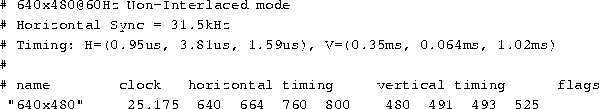
is the VESA-standard timing for a 640x480 video mode. It has a dot
clock of 25.175, which your video card must support. This is
described below. To include this entry in the XF86Config file,
use the line
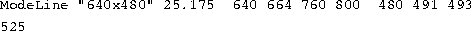
The name argument to ModeLine ("640x480")
is an arbitrary string. By convention modes are named by their
resolutions, but name can, technically, be any descriptive
label.
For each ModeLine, the server checks the mode specifications and ensures that they fall in the range of values specified for Bandwidth, HorizSync, and VertRefresh. If they do not, the server complains when you attempt to start X. For one thing, the dot clock used by the mode should not be greater than the value used for Bandwidth. However, in many cases, it is safe to use a mode that has a slightly higher bandwidth than your monitor can support.
If the VESA standard timings do not work, (you'll know after you try to use them), then look in the files modeDB.txt and Monitors, which include specific mode values for many monitor types. You can create ModeLine entries from these values as well. Be sure only to use values for your specific monitor. Many 14 and 15-inch monitors do not support higher resolution modes, and often resolutions of 1024x768 at low dot clocks. If you can't find high-resolution modes for your monitor in these files, then your monitor probably does not support them.
If you are completely at a loss and can't find ModeLine values for your monitor, follow the instructions in the VideoModes.doc file, which is included in the XFree86 distribution, and generate values from the specifications in your monitor's manual. Your mileage will certainly vary when you attempt to generate ModeLine values by hand. But this is a good place to look if you can't find the values that you need. VideoModes.doc also describes the format of the ModeLine directive, and other aspects of the XFree86 server in gory detail.
Lastly, if you do obtain ModeLine values that are almost but not exactly right, you may possibly be able to modify the values a little to obtain the desired result. For example, if the XFree86 display image is shifted slightly, or the image seems to ``roll,'' then follow the instructions in the VideoModes.doc file and fix the values. Be sure to check the controls on the monitor itself. In many cases, you must change the horizontal or vertical size of the display after XFree86 starts, to center and size the image.
Don't use monitor timing values or ModeLine values for monitors other than your model. If you try to drive a monitor at a frequency for which it was not designed, you can damage or even destroy it.
The next section of the XF86Config file is Device,
which specifies parameters for your video card. Here is an example.
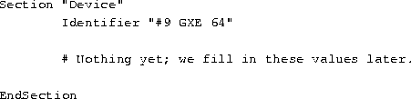
This section defines properties for a particular video card. Identifier is an arbitrary, descriptive string. You will use this string to refer to the card later.
Initially, you don't need to include anything in the Device section except the Identifier. We will use the X server itself to probe for the properties of the video card and enter them into the Device section later. The XFree86 server is capable of probing for the video chip set, clocks, RAMDAC, and amount of video RAM on the board. This is described in Section 5.6.
Before we do this, however, we need to finish writing the XF86Config file. The next section is Screen, which specifies the monitor/video card combination to use for a particular server.
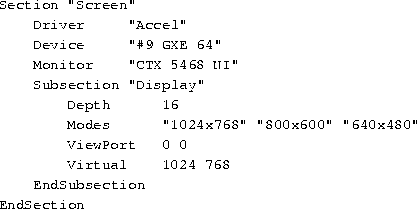
The Driver line specifies the X server that you will be using. Valid Driver values are:
The Device line specifies the Identifier of the
Device section that corresponds to the video card to use for this
server. Above, we created a Device section with the line
Therefore, we use "#9 GXE 64" on the Device line here.
Similarly, the Monitor line specifies the name of the Monitor
section to be used with this server. Here, "CTX 5468 NI" is
the Identifier used in the Monitor section described above.
Subsection "Display" defines several properties of the
XFree86 server corresponding to your monitor/video card combination.
The XF86Config file describes all of these options in detail.
Most of them are not necessary to get the system working.
The options that you should know about are:
"1024x768", "800x600", and
"640x48"0. Therefore, we use a Modes line of
It might be best, when you initially configure XFree86, to use lower resolution video modes like 640x480, which tend to work with most systems. Once you have the basic configuration working, you can modify XF86Config to support higher resolutions.
The Virtual feature is rather limited. If you want to use a true virtual desktop, fvwm and similar window managers allow you to have large, virtual desktops by hiding windows and using other techniques, instead of storing the entire desktop in video memory. See the manual pages for fvwm for more details about this. Many Linux systems use fvwm by default.
Many other options for this section exist; see the XF86Config manual page for a complete description. In practice, these options are not necessary to get XFree86 working initially.
Your XF86Config file is now ready, with the exception of complete information on the video card. We'll use the X server to probe for this information, and add it to XF86Config.
Instead of probing for this information with the X server, XF86Config values for many cards are listed in the files modeDB.txt, AccelCards, and Devices. These files are all found in /usr/X11R6/lib/X11/doc. In addition, there are various README files for certain chip sets. You should look at these files for information on your video card and use that information (the clock values, chip set type, and any options) in the XF86Config file. If any information is missing, you can probe for it.
In most of these examples we demonstrate configuration of a #9 GXE 64 video card, which uses the XF86_S3 chipset. First, determine the video chip set on the card. Running SuperProbe (found in /usr/X11R6/bin) tells you this information, but you need to know the chip set name as it is known to the X server.
To do this, run the command
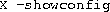
This gives the chip set names known to the X server. (The manual pages
for each X server list these, too.) For example, with the
accelerated XF86_S3 server, we get:
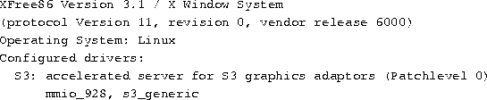
The valid chip set names for this server are mmio_928 and s3_generic. The XF86_S3 man page describes these chip sets and video cards that use them. In the case of the #9 GXE 64 video card, mmio_928 is appropriate.
If you don't know which chip set is in use, the X server can probe it
for you. To do this, run the command
if you use bash as your shell.
If you use csh, try:
You should run this command while the system is unloaded; that is, while no other activity occurs on the system. This command also probes for your video card dot clocks (as seen below), and system load can throw off this calculation.
The output from the above, in /tmp/x.out, should contain lines
like:
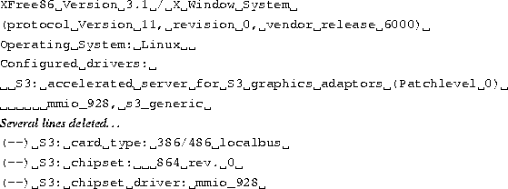
Here, we see that the two valid chip sets for this server (in this
case, XF86_S3) are mmio_928 and s3_generic. The
server probed for and found a video card that has the mmio_928
chipset.
In the Device section of the XF86Config file, add a
Chipset line that has the name of the chip set as determined
above. For example,
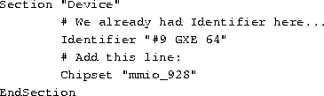
Now, we need to determine the driving clock frequencies used by the video card. A driving clock frequency, or dot clock, is simply a rate at which the video card can send pixels to the monitor. As described above, each monitor resolution has a dot clock associated with it. We need to determine which dot clocks are made available by the video card.
First, you should look at the documentation mentioned above and see if
the card's clocks are listed there. The dot clocks are usually a list
of 8 or 16 values, all of which are in MHz. For example, when looking
at modeDB.txt, we see an entry for the Cardinal ET4000 video
card, which looks like:
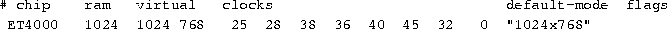
The dot clocks for this card are 25, 28, 38, 36, 40, 45, 32, and 0
MHz.
In the Devices section of the XF86Config file, add a
Clocks line containing the list of dot clocks for your card. For
example, for the clocks above, add the line
to the Devices section of the file, after Chipset.
The order of the dot clocks is important. Don't re-sort the list or remove duplicates.
If you cannot find the dot clocks associated with your card, the X
server can probe for these, too. Use X -probeonly as described
above. The output should contain lines which look like the following:
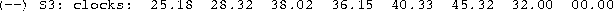
We can then add a Clocks line which contains all of these
values, as printed. You can use more than one Clocks line in
XF86Config if all of the values (sometimes there are more than 8
clock values printed) do not fit onto one line. Again, be sure to keep
the list of clocks in the order that they are displayed.
Be sure that there is no Clocks line (or that it is commented out) in the Devices section of the file when using X -probeonly. If there is a Clocks line present, the server does not probe for the clocks--it uses the values given in XF86Config.
Some video boards use a programmable clock chip. See the manual page
for your X server or the XFree86 README file that describes your
video card. The chip essentially allows the X server to tell the card
the dot clocks to use. For video cards that have clock chips, you may
not find a list of dot clocks for the card in any of the above
files. Or, the list of dot clocks printed when using X
-probeonly will only contain one or two discrete clock values, with
the rest being duplicates or zero. Or, the X server may provide an
explicit warning that the video card has a programmable clock chip,
like:
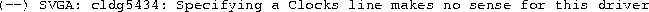
This example is taken from a XF86_SVGA server running a Cirrus
Logic PCI card.
For boards which use programmable clock chips, you use a
ClockChip line instead of a Clocks line in the XF86Config
file. ClockChip is the name of the clock chip as used by the
video card; the manual pages for each server describe them. For
example, in the file README.S3, we see that several S3-864 video
cards use an ``ICD2061A'' clock chip, and that we should use the line
instead of Clocks in the XF86Config file. As with
Clocks, this line goes in the Devices section, after
Chipset.
Similarly, some video cards require that you specify the RAMDAC chip type in the XF86Config file. This is done with a Ramdac line. The XF86_Accel man page describes this option. Often the X server will correctly probe for the RAMDAC.
Some video card types require that you specify several options in the
Devices section of XF86Config. These options are described
in the manual page for your server, as well as in the various files
like README.cirrus and README.S3. These options are
enabled using an Option line. For example, the #9 GXE 64 card
requires two options:
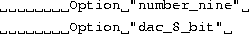
An X server may work without the Option lines, but they are
necessary to get the best performance out of the card. There are too
many options to list here. They are different for each card. If you
must use one, the X server manual pages and various files in
/usr/X11R6/lib/X11/doc will tell you what they are.
When you finish, you should have a Devices section that looks
something like:
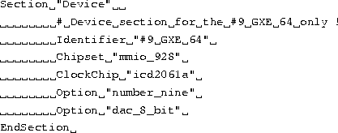
There are other options which you can include in the Devices
entry. The X server manual pages provide the gritty details.
With your XF86Config file configured, you can fire up the X server and give it a spin. Again, be sure that the /usr/X11R6/bin directory is on your path.
The command to start XFree86 is
This is a front end to xinit. It starts the X server and
executes the commands in the file .xinitrc in your home
directory. .xinitrc is a shell script that contains the command
lines of the X clients to run when the X server starts. If this file
does not exist, the system default
/usr/X11R6/lib/X11/xinit/xinitrc is used.
A simple .xinitrc file looks like this:
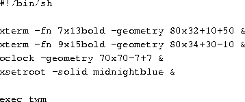
This script starts two xterm clients and an oclock, and
sets the root window (background) color to midnightblue. It
starts twm, the window manager. twm is executed with the
shell's exec statement. This causes the xinit process to
be replaced by twm. After the twm process exits, the X
server shuts down. You can cause twm to exit by using the root
menu. Depress mouse button 1 on the desktop background. This displays
a pop-up menu that allows you to Exit Twm.
Be sure that the last command in .xinitrc is started with exec, and that it is not placed into the background (no ampersand at the end of the line). Otherwise the X server will shut down immediately after it starts the clients in the .xinitrc file.
Alternately, you can exit X by pressing Ctrl-Alt-Backspace in combination. This kills the X server directly, exiting the window system.
The above is a only a simple desktop configuration. Again, we suggest that you read a book like The X Window System: A User's Guide (see Appendix A). The possible variations of X usage and configuration are too many to describe here. The xterm, oclock, and twm manual pages will provide you clues on how to begin.
Often, something will not be quite right when you first start the X server. This is nearly always caused by something in your XF86Config file. Usually, the monitor timing values or the video card dot clocks are set incorrectly. If the display seems to roll, or the edges are fuzzy, this indicates that the monitor timing values or dot clocks are wrong. Also, be sure that you correctly specified the video card chip set and options in the Device section of XF86Config. Be absolutely sure that you are using the correct X server and that /usr/X11R6/bin/X is a symbolic link to it.
If all else fails, try to start X ``bare''; that is, with a command
like:
You can then kill the X server (using
Ctrl-Alt-Backspace) and examine the
contents of /tmp/x.out. The X server reports any warnings or
errors--for example, if your video card doesn't have a dot clock
corresponding to a mode supported by your monitor.
The file VideoModes.doc, which is included in the XFree86 distribution, contains many hints for adjusting the values in your XF86Config file.
Remember that you can use Ctrl-Alt-Numeric + and Ctrl-Alt-Numeric - to switch between the video modes listed on the Modes line of the Screen section of XF86Config. If the highest resolution mode doesn't look right, try switching to a lower resolution. This lets you know, at least, that those parts of your X configuration are working correctly.
Also, adjust the vertical and horizontal size/hold knobs on your monitor. In many cases, it is necessary to adjust these when starting up X. For example, if the display seems to be shifted slightly to one side, you can usually correct this using the monitor controls.
Again, the USENET newsgroup comp.windows.x.i386unix is devoted to discussions about XFree86. It might be a good idea to read the newsgroups for postings related to video configuration. You might run across someone with the same problem.
There are also sample XF86Config files which have been contributed by users. Some of these are available on the sunsite.unc.edu archive in the /pub/Linux/X11 directory, and elsewhere. You might find a configuration file that somebody has already written for your hardware.